<From: https://zhuanlan.zhihu.com/p/615294902?
星期三, 三月 22, 2023 5:21 上午
本文源于知乎作者RF-93798
前言
转眼之间，俄乌冲突已经历时一年，在冲突爆发一周年之际，我国政府发布了《关于政治解决乌克兰危机的中国立场》，其中第三条停战止战与第四条启动和谈代表了我国政府一贯的和平立场。从效果上看，俄乌双方均对我国提出的和平倡议表现出了兴趣。但冲突背后，真正引发冲突并在过去一年中不断为冲突升级煽风点火的势力却试图阻挠我国政府为实现和平的努力。
与一开始外界预计不同的是，2022年2月24日俄军发动“特别军事行动”并没有复刻2014年克里米亚危机中“小绿人”（也被称为“有礼貌的人”）进行武装游行并夺控要地，摧毁当地乌军军政人员抵抗意志最终不战而胜的成功。相反，由于第一批乘坐直升机突入戈斯托梅利的安东诺夫机场的200名空降兵未能在短时间内成功夺控机场，第二批原定乘坐伊尔76机降并被认为之后将遂行夺控基辅要害部门以控制乌克兰军政中枢的部队被迫返航。虽然首批机降的200名空降兵顶住了数十倍于己的乌军进攻，并与当晚从陆路赶来增援的俄海军步兵哈尔滨旅等部队配合，挫败了乌克兰军队的企图，但此时基辅的军政机关已经撤离，战前规划的目标已经无法实现。而战争爆发几天里，逐渐回过味来的乌军也开始有组织地抵抗俄军。
由于战前对敌抵抗力量和决心估计不足，除了南线俄军进展相对顺利外，苏梅——基辅一线的俄军此后陷入夺控部分定居点但战役目标已无法实现，且上千公里的补给线此时显得尾大不掉的窘境，哈尔科夫方向冒进的格鲁乌部队也在哈尔科夫城内遭受损失后撤出，顿涅茨克与卢甘斯克一线除卢甘斯克方向推进相对顺利外，在顿涅茨克，俄军与顿涅茨克人民军面对着乌军经营八年的筑垒地域再加上兵员6万人左右，战斗力，战备情况均居乌军首位的顿涅茨克集群也陷入了苦战。
随着着俄军的闪击行动失败，军事行动向长期大规模冲突发展。北约为主的西方国家开始计划利用乌克兰来对抗甚至拖垮俄罗斯，配合美国在中亚地区发动的颜色革命（在“特别军事行动”前不久，哈萨克斯坦就爆发了颜色革命，不过以俄空降兵为主体的独联体维和部队成功挫败了政变企图）以实现针对我国的海陆包围网。西方国家一方面越过联合国框架对俄罗斯发动单方面制裁，一方面为乌克兰提供大量军火。
除去蛇岛这个最初就可能是针对敖德萨地区的两栖佯动夺占而后莫名成为焦点的小岛外，俄军在乌克兰战场上主要有三次撤退。由于后勤补给线过长且目标无法达成，俄军首先放弃了基辅——苏梅一线退入白俄罗斯，这次撤退是主动撤退，总体上组织有序，俄军有生力量遭受的损失可以忽略不计。此后，在乌克兰进行大规模动员并获得了大量西方火炮，装甲力量援助（开战后半年西方国家对乌克兰援助了大约400辆坦克，1000辆装甲车辆，400门火炮）后，乌军在北约提供的情报指引下在伊久姆一线对俄军展开反击。由于当地俄军力量严重不足（如在要地红利曼，俄军在当地只有少量顿涅茨克人民军守备部队与库班志愿者营共计1000人左右的力量，却要面对乌军3个旅超过6000人的进攻），俄军最终选择撤退以保存有生力量。此轮撤退虽然保存了有生力量，但这一线对于俄军而言并不是可有可无的鸡肋，最近克列缅纳亚一线俄军展开的接触进攻也可看出当初退却确实是无奈之举。而南线乌军在赫尔松一带发动的反攻，虽然俄军在赫尔松方向兵力同样一度捉襟见肘，但在以逸待劳的并一度开展弹性防御的俄军精锐（俄军表现最亮眼的空降兵近卫76师等部队）面前，除了不断损兵折将外并无太大建树，不过由于安东诺夫斯基大桥被毁，而冬季的第聂伯河上的浮冰将使得俄军难以通过渡轮获得足够的补给，因此新上任总指挥的苏罗维金上将下令俄军撤出第聂伯河右岸，在这次撤退中，乌军由于损失惨重，不敢主动追击，根据俄罗斯媒体的统计，俄军在3天内从第聂伯河右岸撤出了20000名军人和3500件军事装备并有条不紊地炸毁了安东诺夫斯基大桥的桥面，可以称得上是一次教科书式的撤退行动。
虽然几次胜利给乌克兰方面带来了巨大的信心，但需要注意的是，除了伊久姆一线，俄军的退却不是在掌握战场主动权的情况下出于战役目的与后勤等因素影响主动撤退外，其余撤退均是事先规划并较为有序地实施的。在整个俄乌冲突中，俄军有生力量并未遭到成建制的大量伤亡。而反观乌克兰方面的情况，继续冲突的前景已经非常不容乐观。
1.逐渐进入状态的对手与几乎落空的经济制裁
在整个俄乌冲突中，俄军有生力量并未遭到过成建制的大规模伤亡。由于俄军方面一直公开地发布讣告，俄军的伤亡数据较为透明。根据俄国防部的数据，截至2022年3月7日，俄军阵亡498人；截至2022年3月25人日，俄军阵亡1351人；截至2022年9月21日，俄军阵亡5937人，而参考同期的，西方媒体BBC俄语与反俄媒体Mediazona根据讣告数量统计的阵亡人数，截至2022年9月16日，俄军与俄联邦国民近卫军，车臣武装力量，瓦格纳雇佣兵，志愿兵部队共计阵亡6476人，各方数据交叉验证，俄军伤亡数据比较真实透明。而此后，2022年12月9日，BBC俄语与Mediazona根据开源情报统计与俄联邦国民近卫军，车臣武装力量，瓦格纳雇佣兵，志愿兵部队共计阵亡10002人；同月23日，统计人数为10505人；2023年2月3日，阵亡人数达到13030人；同月17日，阵亡人数达到14709人；截至冲突爆发一周年的2月24日，阵亡人数达到15136人。同时，顿涅茨克地区政府直到2022年底一直都在网上公布上网信息，截至12月24日最后一次公布，顿涅茨克人民军共计阵亡4200人，而根据Mediazona统计，截至冲突爆发一周年，可统计到顿涅茨克人民军共阵亡4700人左右。卢甘斯克地区政府并未公布损失，但同样根据Mediazona统计，截至冲突爆发一周年，卢甘斯克人民军共计阵亡1350人左右。由此可见，俄军方面在一年的冲突中共计阵亡2万人左右。
从阵亡者所隶属单位来看，在冲突爆发最初阶段，阵亡者集中在空降兵，海军步兵，格鲁乌特种部队以及国民近卫军；而此后，装甲兵和摩托化步兵的阵亡数增加；在最近，承担了大量攻坚任务的瓦格纳部队的伤亡数字上升。总体上来看，俄军在2022年末进行了部分动员后，现在前线相对于伊久姆撤退时期只能维持一个方向上的足够兵力已经得到了大幅改善。不过通过数据细节分析，俄军的现在一线相对于此前增加的有生力量大部分是来自于瓦格纳和志愿者。截至2022年底（12月23日），俄军动员兵阵亡492人，而截至2月17日，包含1月1日在后方庆祝新年时因为信息泄露遭到乌军火箭炮打击而阵亡的101名动员兵的动员兵总阵亡数为1121人，其中有大约50人死于俄罗斯境内（由于自杀，事故和2022年训练中心遭受的恐怖袭击），到3月3日，阵亡人数上升至1366人。相对于瓦格纳，空降兵与海军步兵的伤亡，尤其是在今年以来阵亡人数上升趋势增加的情况下，占据乌克兰战区俄联邦武装力量最大比例的动员兵的伤亡仅占小部分，考虑到数据往往有数天至十数天的延迟，趋势上，动员兵的伤亡幅度在进入2月后才开始上升，可以看出到二月初为止相当数量的动员兵还处于训练磨合适应阶段，俄军并不急于将动员力量大规模投入战场，就算不再进一步进行动员，俄军的有生力量还有很大的腾挪空间。
而就军事装备而言，除单兵装备与前线大量使用的四旋翼无人机以及伊朗提供的沙希德巡飞弹外，俄军装备基本来自本国库存和生产。由于俄方未公布装备损失且西方开源数据在对俄军战损坦克装甲车辆进行统计时会出于立场考虑将一辆残骸不同角度的照片被重复统计的例子，而西方报道（如CNN在2023年3月1日的报道中称乌军在弗勒达地区一次坦克战中击毁130多辆俄军坦克与装甲运兵车，但根据双方图片视频资料显示，乌军袭击了俄军摩步部队的一支30件左右装甲装备组成的行军纵队，俄军遭到了一定损失后撤离，至少半数的装备被回收或撤离，乌军将损失归为给予他们重大损失的海军步兵155旅，但影像资料里没出现任何属于155旅的装备，而在媒体添油加醋之下变成了乌军击毁了海军步兵155旅所有的装甲装备，全歼155旅。而在与媒体幻想平行的现实世界里，乌军甚至没有能力驱逐155旅突入弗勒达别墅区的突击队，根据BBC俄语与Mediazona的统计俄海军步兵在一月一共只损失了19名士兵）由于立场经常性的编造、夸大俄军损失，其数据更不具备可信度，俄军的坦克装甲车辆损失数量难以统计。但可以肯定的是，俄军实际损失的坦克远低于CNN在2023年2月9日报道中宣称的Oryx统计数据即被击毁超过1000辆被俘获544辆。此外该报道还宣称俄军在开战前装备了3000辆坦克，在乌克兰战场上已损失了其中2000辆，加上步兵战车和装甲运兵车，俄军共损失9100件装甲装备，但这样的统计数据明显与前线情况不同，虽然由于损失使得部队编制内装备出现了混编同型号库存翻新装备与新生产装备，但总体而言可以满足编制所需装备。只能解释为大量的重复统计、出于政治需要的夸大、以及由于对装甲装备尤其是坦克而言，大部分战损是可以通过回收修理挽回的，开源统计采用的照片和打击视频手段难以确认装备是否全损(如果被顺利回收，坦克全损的比例很难超过30%，除非发生殉爆或被彻底焚毁，否则仅凭影像资料很难判断是否全损），而对于战场优势方而言，装甲装备尤其是坦克在多数情况下可以被回收并经过维修后再次投入作战。
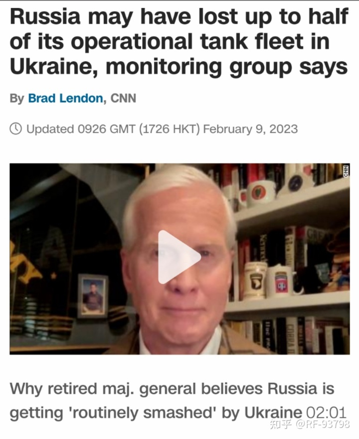
另据ISW在2月27日报告中引用的乌军信息显示，通过缴获的作战地图可以判断，俄军前线部队采用了由6辆坦克，12辆装甲车与炮兵，无人机及反坦克力量组成的突击分队，而分队下突击连由指挥分队，两个突击排，无人机小组，装甲小组，火力支援排，炮兵排和医疗小组构成，其中的基干作战力量又由12-15人的突击排构成，突击排的步兵以3人为一个战术组进行机动攻击。并没有出现所谓的所谓俄军坦克装甲车辆严重不足，被迫使用步兵进行冲击。
与西方媒体多次宣称的俄军军火，尤其是导弹库存即将见底的报道不同，虽然在开战之初俄军导弹打击火力被认为严重不足，但直到近期，俄军还在持续地使用巡航导弹打击乌克兰后方目标，纽约时报在2022年11月底的报道中表示俄罗斯的导弹库存“让西方和乌克兰官员感到吃惊“，而华盛顿战争研究所（ISW）也在2022年12月31日的报告中对于俄军远程打击进行评价时表示无法肯定俄军远程打击规模的变化与弹药数量有关。而向朝鲜或伊朗购买炮弹这样的新闻更完全是炒作，现在并未出现俄军使用来自外国炮弹的确切证据。确实，ISW宣称俄军每日发射炮弹数量由战争之初的6万枚左右下降为现在的每日2万枚左右。乌克兰国防部情报局局长（乌克兰媒体传闻即将接任国防部长）布达诺夫在接受福布斯采访时宣称，俄军弹药即将耗尽，正试图从伊朗进口2万枚炮弹。但根据俄国防部在今年2月答复瓦格纳的弹药供给数据来看，仅在2月18日至20日，仅巴赫穆特方向的瓦格纳与其他志愿者部队就从俄国防部接受了1660枚火箭弹，10171枚榴弹炮与迫击炮炮弹以及980枚坦克炮弹，俄军弹药远未到山穷水尽的地步。而根据前线火力下降的时间轴进行分析，乌克兰在获得北约远程打击弹药之后，俄军开始将前线弹药存储点进行分散的部署，而谢尔久科夫时期军改造成的俄军后勤保障力量不足的缺陷，使得俄军的弹药运输分配开始出现问题。另一方面，根据俄国防部和梅德韦杰夫等高官的表示，俄军工企业正在全力生产前线需要的军事装备。目前来看，前线的道路情况，分散的弹药点和糟糕的调度才是俄军火力下降的最大因素。
另一方面，比起军事上的泥潭，俄罗斯经济在西方的制裁之下依旧保持了高度的活力。与历史上令人记忆深刻的苏联入侵阿富汗行动中的粮食进口危机不同，今天的俄罗斯不但实现了粮食基本自足，还成为世界上最大的小麦出口国（2020年俄罗斯小麦出口量占全世界出口量的19%，排名第二的美国为13%）。而就西方制裁后俄罗斯进出口市场出现的空缺，ANN在报道中认为，中国商家填补了欧美企业撤离俄罗斯后的空缺，俄罗斯并未出现想象中的物资短缺。欧洲商业协会（AEB）也统计，俄罗斯2022年全年新车销量中，奇瑞汽车、长城汽车和吉利汽车的合计份额占比由2021年的6.3%提高到16.5%。而出口方面，根据日经报道，2022年1月-11月，印度对俄贸易额达到上年度的3.4倍，其中原油进口4.4倍。不仅如此，俄罗斯对阿联酋与埃及的能源出口量也成倍增长，而这些国家被认为是俄罗斯能源的加工出口基地。而日欧虽然大量减少了从俄罗斯的直接能源进口，但年累计贸易额却增长了10%左右，其中欧盟1-9月从俄罗斯直接进口的能源数量仅为2021年全年进口量的60%，但实际支付金额已超过2021年支付金额。从宏观经济数据来看，除了制裁之初卢布出现过大幅波动外，2022年的俄罗斯经济情况与世界整体经济情况相比并未发生明显恶化。俄罗斯2022年GDP下降2.1%，远低于IMF在2022年7月估计的下降6%，好于2020年，而IMF于2023年1月发布的预测数据更显示，俄罗斯在2023年GDP增长率为0.3%，好于德国的0.1%与英国的-0.6%。就通货膨胀率而言，根据俄罗斯卫星通讯社2月22日报道，俄罗斯2022年度通胀率为11.9%，虽然仍然达到两位数，但考虑到世界主要国家中，除了中国（1.8%）保持低通胀以外，其余国家通胀率数据都不容乐观，与德国7.9%的通胀率相比，作为冲突当事方的俄罗斯通胀率显得中规中矩。总体而言，俄罗斯经济在遭受西方经济制裁中表现得并不难看，西方通过制裁绞杀俄罗斯经济的企图短期之内基本上可以说是失败了，俄罗斯已经找到了继续军事行动与经济发展的平衡点。
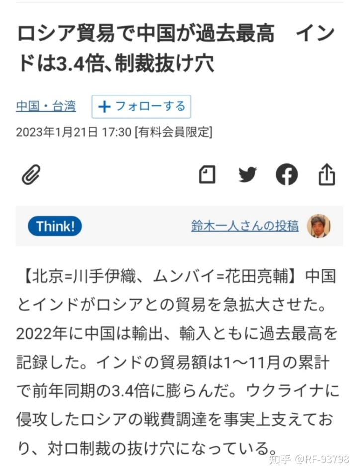
没有全世界大部分人口与最大工业国支持使西方国家的制裁显得软弱无力
2.血肉磨坊与崩坏的动员体系
由于乌克兰军队由于扩编和大量小规模部队被成建制歼灭，且乌克兰军队与政府刻意隐瞒人员死亡信息造成后方大量家属被迫求助于第三方寻找“失踪”亲属，而乌克兰国防部发布的战报信息从冲突第一天开始就被普遍认为是毫无意义的编造数据与信息污染，因此，乌克兰方面的损失难以被统计，目前可见的有关乌克兰损失情况的数据基本都是根据开源信息完成，因此不同机构之间统计数据往往有较大差距，但没有人能够否定，乌军中的职业军人已经损失殆尽，目前尽管动员了上百万人员参战，但乌军的在战场上依然没有获得优势。战前，乌克兰军队被认为有26万左右的兵力，主要由29个旅的正规军与海空力量构成，而正规军之外还有20个左右的各式国民卫队单位以及边防力量。而乌军还试图以州为单位组建20多支领土防卫部队，根据美国军事网站“战区”（The War Zone）在冲突爆发前一个月左右刊载的文章反映，乌克兰的领土防卫部队拥有8万多人，他们缺乏训练，缺少必要的武器（并不是指装甲装备，他们基本获得不了装甲力量，过度缺少枪支尤其是机枪使得他们甚至必须使用DP27或是M1910机枪），国土防卫人员大多来源于本地，类似旧中国的民团，由于缺乏武器和训练，冲突爆发前及冲突之初被认为他们不会被派出州界作战，不会被补充到前线，仅遂行本地防卫任务。
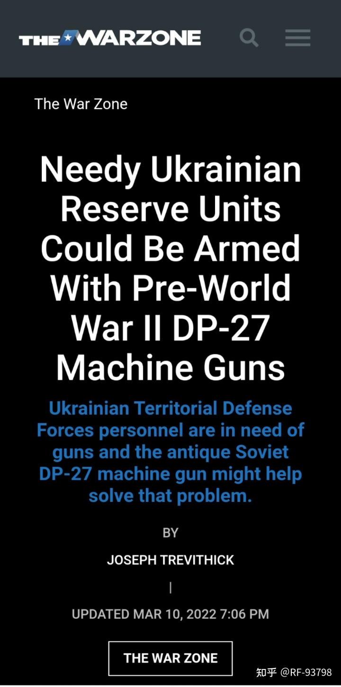
领土防御部队缺少足够的装备甚至是轻武器
在冲突爆发后，乌克兰部队令人意外地被组织起来，尽管当时的影像资料显示乌军遭到了严重的伤亡，但他们承受住了第一波突击。随后，乌克兰政府开始扩充军队，并在国际上招募来自国外的雇佣兵。来自外国的雇佣兵最初被作为乌克兰方面的宣传被使用，吸引了来自各国的网红，但随后俄军的导弹袭击造成数百名雇佣兵伤亡，雇佣兵中的网红开始设法逃离乌克兰，而没能逃离的毫无作战经验的雇佣兵也开始被送到基辅前线与俄军交战，此时，雇佣兵力量数量较少且缺乏组织，缺少武器弹药，士气低落，逃出乌克兰的雇佣兵成员表示他们完全被当作一次性消耗品使用。此时外界虽然知道乌克兰军队损失较大，但并没有明确的伤亡数字。
随着俄军退出基辅苏梅一线，冲突中心重新回到顿巴斯地区，在5月底结束的马里乌波尔围城战中，乌军海军陆战队36旅，机械化53旅残部，摩托化56旅一部，臭名昭著的纳粹武装亚速营以及领土防卫部队，警察，边防共计万人左右被包围，其中先后有4000余人被俘，其余几乎全数被击毙。是役，乌克兰方面可确认的损失就达万人左右，因为是围歼战，马里乌波尔围城战也是冲突中少数乌军损失较容易统计的作战。值得注意的是，虽然马里乌波尔之战中乌军损失了大量战前精锐部队，但纳粹武装“亚速营”的大部分成员却因为投降而幸存，他们中通过换俘回到乌军中的人员成为重要战斗力量。
当顿巴斯前线激战至6月时，乌克兰总统泽连斯基表示仅在顿巴斯地区每天就有60-100名士兵阵亡。而他的亲密顾问阿拉卡米亚则表示，伤亡数字比这更大。据称，仅顿巴斯地区，每天就有多达1000人的乌克兰士兵伤亡，其中200-500人丧生。而美军参联会主席米利在被问及乌军伤亡时，也认为乌军每天至少500人左右的伤亡完全在预期之内。
与此同时，其他战线上，乌军也没有太消停，在扎波罗热方向，乌军多次发起营级规模的冲击，损失也并不小。乌军除了在不断动员人员补充到战前就拥有的部队，也不断在建立充实新的部队，其武装力量规模也在不断扩大。5月时，乌克兰国防部长列兹尼科夫表示将动员100万军队，而6月时，阿拉卡米亚表示乌克兰“已经动员了100万人，正在动员另外200万人”。但是，由于乌克兰军队糟糕的指挥与前线大量的伤亡，大量的动员人员并不是在后方接受训练接收装备而是被以小单位的形式抽调到顿巴斯前线充实战线。战前，乌克兰军队的顿巴斯集群是乌军中战备水平最高的部队，其拥有至少6万名士兵，但在短短两个多月后，哪怕经过多次补充，乌军还是必须抽调哪怕最西部外巴尔喀阡州领土防卫101旅等各种动员部队投入顿巴斯前线。这样的补充一方面反映了乌军在前线高居不下的伤亡，另一方面补充的大量毫无经验的动员兵被糟糕的指挥官派往第一线直面俄军的炮火，而老兵则被撤到二线，进一步恶化了伤亡。在2022年4月至8月的时间里，大量乌军单位在网络上发布了他们没有足够物资，在前线伤亡惨重的求援视频。而金融时报的记者在7月份对于乌军的采访也侧面证实了乌军持续的大量伤亡，乌军一个60人的分队被派往前线三周后只剩下20人。
截至7月，乌军被认为已经阵亡超过5万人，不可挽回损失可能超过10万人。在持续的高伤亡中，乌军一方面在加紧后方动员，一方面，利用俄军合同兵六个月服役期到期大量回国造成乌克兰战场俄军兵力比起冲突爆发时的10 万人左右大幅下降的空挡，一部分被认为作为反击力量的乌军也开始接受北约教官的训练，而雇佣兵虽然依旧来源复杂，既有来自欧美的参与过入侵叙利亚、阿富汗以及伊拉克的老兵，也有来自东亚毫无战斗经验的邪教徒与逃债人员，但根据日籍雇佣兵的表述，他们的排长由波兰现役军人担任，可以看出北约方面也在试图整备雇佣兵武装。
在赫尔松地区，乌军一直尝试在赫尔松地区发动反攻。八月底开始，乌军的反攻从之前的间断性小规模反击转换为大规模反攻。这场历时三个月左右的反攻中，乌军损失惨重，被认为仅阵亡就达到15000人-20000人。在因古列茨河南岸的口袋阵中，乌军每天将部队送进俄军炮火和轰炸构筑的死亡陷阱中。8月31日，反攻开始不久后，华尔街日报就报道了被送入后方医院的伤员数量之多让医生怀疑发动是否应当发动进攻。9月底纽约时报在报道中记录，乌军指挥官表示他们遭受着“巨大”的伤亡，前线士兵表示他们的部队在两小时内就损失了50人，而在对俄军控制下的村庄的一次不成功的攻击中他们就伤亡了数百人，而乌军中的医生表示她所治疗的数百名伤员都来自于炮击，在看不见对手的战斗中他们被摧毁。而在9月的北线，乌军在反击中也被认为阵亡了至少数千人。值得注意的是，被当作轻步兵投入的雇佣兵部队也遭受了重大的损失。在北线和南线的两次反击中，乌军消耗了大量有生力量和装备。11月，欧盟主席冯德莱恩在推特上发布的视频中承认乌军死亡已经超过了10万人。
而在顿巴斯正面战场，瓦格纳的加入让乌克兰军队再次被丢进绞肉机。纽约时报在11月底的报道中记录了乌军的大量伤亡，在一天半的时间内仅一家野战医院就接收了300名左右伤员。战斗的激烈程度反映在乌军大量部队投入战场后就迅速伤亡惨重。在位于阿特木斯克侧翼的苏勒达尔，乌军空中突击46旅投入战场仅3天就伤亡殆尽，平均每天数百至上千人。在2023年1月，乌军在前线的94个旅级单位中有包括101总统旅在内的近30个旅级单位在巴赫穆特-奥特姆斯一带被确认。而到了二月初，乌方消息称阿特木斯克一带驻防的15、24、30、46、53、57、61、71、77、112、115、118、125、241旅及214特种营因为伤亡惨重被撤出。在这个阶段中，关于乌军的伤亡数据，出现了不同的统计，其中最大的统计为美国国防部长前高级顾问麦格雷戈前陆军上校在二月初所称的乌军总司令扎卢日内向参联会主席米利汇报乌军不可恢复性损失（包括阵亡、不可恢复的伤残与被俘）数字为25.7万人。而根据另一份据称为以色列情报机关摩萨德流出的统计数据，乌军有15.7万人阵亡，此外还有234名北约教官，2458名北约士兵，5360名雇佣兵被确认死亡。由于乌军不系统性回收统计己方阵亡人员尸体的作法，再加上乌军来源复杂，正规军，雇佣兵，领土防卫部队，纳粹民团以及可能来自北约的外来介入势力混杂在一起，且由于伤亡惨重，大量动员兵、领土防卫部队被拆散补充入其他单位中。1月11日CNN报道中乌军前线士兵声称半数以上士兵都是匆忙补充进部队，他们很快就会死去以至于战友甚至不能再他们活着的时候记住他们的无线电呼号，而他们的死亡也没有人进行统计；参加乌军雇佣兵部队的前美国海军陆战队员奥芬贝克在接受ABC采访时声称乌军士兵在前线的预期寿命只有4个小时； 3月5日接受基辅独立报采访的来自不同部队的士兵也证实，巴赫穆特前线他们所在的部队均伤亡过半，仅接受过两周训练的动员兵被派往阵地，他们之前被告知不会被派往前线，而在前线，他们缺乏各种装甲兵器、火炮、弹药，在那里他们活着离开的概率“不是五五开，而是三七开”。而3月15日POLITICO的报道则声称一年内有超过10万名乌军人员死亡。
由于乌克兰方面不系统统计己方伤亡数据，甚至刻意对家属隐瞒军人的死亡情况，前线部队的损失难以被统计。各方开源数据只能依靠网络群组中的讣告、各种采访报道信息、乌军士兵在网上发布的视频以及各部队在前线的可视化损失等来统计，但随着冲突的延续，乌军各部队的编制情况也出现了较大的变化，前线出现的大量旅级番号的编制是否充实，实际编制数量等信息统计难度愈发困难，而雇佣兵部队成分更加复杂，根据网络群组发布的讣告来看，来自格鲁吉亚的雇佣兵死亡占比较大。，而美防长前高级顾问麦格雷戈前陆军上校则声称有2000-2500名波兰“雇佣兵”在乌克兰死亡，再考虑到统计者的不同立场，因此各方数据存在着较大差异。根据各方数据，可以合理推测乌克兰方面有生力量的不可恢复性损失至少超过20万甚至达到30万。
前文所述，乌军战前军队的基干力量是29个旅级单位，而随着前线的巨大伤亡和快速扩张造成的空缺，使得乌克兰方面进行了大量动员。目前，可以被确认到的旅级部队番号超过100个，其中绝大部分根据编制是机械化/摩托化步兵为主要力量的部队。乌军机械化/摩托化部队普遍由3个机械化/摩托化营、1个坦克营、旅属炮兵群以及各种辅助力量构成，编制人数一般在4000-5000人左右，而坦克旅，炮兵旅编制内人员较少，坦克旅编制人数仅为2000-3000人，炮兵部队则更少。加上各特种作战部队人员以及纳粹武装亚速突击旅（由亚速营改编）、海妖营、艾达营等，乌军的地面力量在满编的情况下应该在50万人左右（雇佣兵部队因为人员来自国外不计算在内），考虑到乌军海空力量目前编制内人员较少，哪怕加上文职卫勤人员，乌军实际人数也不会超过70万。但实际上，前线大量乌军部队并不满员，一个旅级单位拼凑出一支营级战斗群在前线作战的情况时有发生。而前文所引述乌克兰方面冲突爆发三个月后，乌军就已经动员了100万人并还在动员200万人的说法来看，乌军的不可恢复性损失以30万计也无法满足乌克兰方面所称的百万之众。这既证明乌军的损失可能远超推测，更证明乌克兰方面的动员问题不小。
乌克兰在2014年克里米亚危机之后，吸取危机中乌军糟糕表现的经验，一方面扩充充实现役部队规模，另一方面试图完善动员体系。2014年，乌克兰在军队正规部队对于颜色革命中政变上台政府缺乏认同感而出现大量投降乃至倒戈的情况下，匆忙进行动员。在2014年的三次动员中，乌军共动员了10.5万人。2015年，乌克兰在继续动员10万人的基础上重新恢复了征兵制，军队和各种其他武装力量持续扩张，此外，日本安全保障战略研究所（SSRI）的报告中认为乌克兰拥有90万有服役经历的预备役人员。而在波罗申科时期，乌军确立了轮战制度，尽管由于明斯克决议其中大部分人经历的战斗与此次俄乌冲突的烈度不可同日而语，但不可否认乌克兰有大量预备役人员具备一定的战斗经验。乌克兰政府进行首轮动员的100万人的数字，应该也是根据本国预备役人员数量评估决定的。
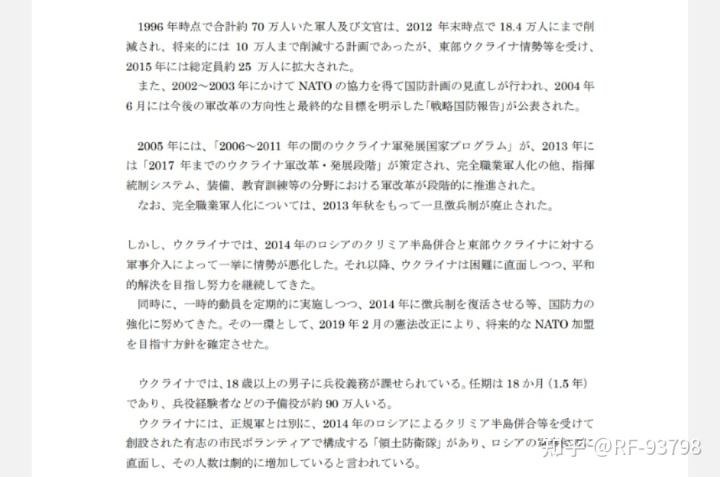
而另外200万人的根据，应该是来自于乌克兰实际控制人口。根据联合国人权高专办的统计数据显示，冲突爆发以来，大量乌克兰人逃难至国外，截至2023年2月，还有超过800万乌克兰难民处于境外。而根据联合国人口基金2022年统计数据，2022年乌克兰拥有4300万人口，除去顿涅茨克地区（约400万，部分位于乌克兰控制区）、卢甘斯克地区（约150万，部分位于乌克兰控制区）、赫尔松地区（约110万，部分位于乌克兰控制区）、扎波罗热地区（约190万，部分位于乌克兰控制区）以及克里米亚（约200万）境内的人口外，乌克兰还拥有约3300万人口，而进一步除去境外的难民中来自冲突爆发前乌克兰控制区的人口（冲突爆发后俄罗斯接纳的难民超过280万，其中部分来自于顿涅茨克地区与卢甘斯克地区），乌克兰控制区内实际人口最多不会超过2800万人（由于乌克兰上一次全国人口统计实施在20年前，数据可能部分存在差异）。
根据历史上的人口与军队比例来看，在农业社会时期，通常认为哪怕是军国主义国家如斯巴达或秦帝国，国家极限动员能力是人口的1/25-1/30，如果到达1/20，国家就会面临崩溃的风险。而到了工业化时代，由于机器生产可以释放了大量原本应该从事生产的成年男性，国家的动员潜力得到提升，在伟大卫国战争中，苏军动员了15%左右的人口，这已经是在有部分外援的情况下，工业国家能够在短期内维持的极限，但巨大的牺牲尤其是青壮年男性的大量死亡使得日后苏联甚至出现了政治人才的断档，这也被认为苏联最终解体的一个原因。根据乌克兰控制区内现有人口，理论上若是采取苏联式动员的模式，再动员200万人也只会达到控制区人口比例的12%左右，距离苏联的15%还有差距，再加上本轮冲突中乌克兰得到了西方尤其是北约及欧盟的全力支持，理论上能够从工农业中释放出更多人口（苏联在1945年工农业职工数量为2730万，其中男性占比44.7%，约1220万人，相比1940年下降16.9%，人数上减少了700万人左右，且苏联动员了14-16岁少年参加劳动，而乌克兰获得的援助较苏联通过租借法案获得的援助更为优渥），但劳动人口与军人的比例也不会低于4.5-5:1（1945年，日本劳动力人口与军人比例为5:1，德国为3.4:1，但日本从中国，东南亚及朝鲜掠夺了大量劳动力和农产品，而在德国被强迫劳动的外国劳工与俘虏更是超过7000万。与之相对的，苏联的比例一度下降到3.1:1，在战争胜利时为4.4:1，这样的比例尽管拥有租借法案的援助也普遍被认为是非可持续性的）乌克兰能极限动员的人口应该在450万左右，除去战前的数十万武装人员和预备役90万人，可以再动员300-350万人，这么看来乌克兰政府宣布的200万人动员计划也并非不可实现。
但实际上，虽然乌军已动员人员在数量上较俄军任有优势，但远远达不到乌克兰政府宣称的百万甚至三百万之众，在损失了大量有经验人员后，数量优势已经被俄军的火力和兵员素质相抵消，甚至在大部分战线上被动挨打。而后方，乌军征召士兵的行动也遭到了不小的挫折，尽管理论上人口潜力还未耗尽，但是乌军征兵处已经开始闹兵荒了。开源信息对于乌军展开过的征兵次数统计虽然有出入，但可以肯定的是，自冲突爆发以来，乌军已经进行了10轮左右征兵，接近2014与2015年两年征兵轮数总和的两倍，并且进行的并不顺利。而从公开报道来看，例如基辅日报的报道中被采访的普通士兵几乎都在40岁以上，甚至不少接近60岁，而后方16岁的未成年人，失去双手手掌甚至双目失明的残疾人也成为征兵对象，更有甚者，网络上充斥着大量乌克兰市民拍摄的征兵办人员当街掳走路过男子的视频。
之所以出现这样光怪陆离的情景，究其原因，应该有两方面原因。一方面，乌克兰的人口数字虽然并不难看，但乌克兰是世界上人口老龄化较为严重的国家之一。根据世界银行统计数据，2021年老龄人口（65岁及以上）占总人口比例，乌克兰为17%，高于我国的13%，低于老龄人口大国日本的30%，而根据1937年人口普查数据，卫国战争爆发前苏联的老龄人口占比约为4%左右，若排除波罗的海三国与乌克兰西部地区，除去基本不具有征募价值的老龄人口，苏联动员了非老龄人口中的约14%，按照同样的统计口径，乌克兰的可动员人口不超过330万。而进一步优化数据，以15-64岁人口占比来看，根据世界银行数据，2021年乌克兰该当人口占总人口的67%，为1880万左右，而1937年苏联数据显示当时10-59岁人口占比在70%-72%之间，伟大卫国战争爆发后苏联动员了战争爆发前适龄人口中的约20%的人口，以此为依据，乌克兰可动员人口在370万-380万人左右。此外，乌克兰人口中男性占比约为46.3%，而1940年苏联男性占比为47.9%。考虑到性别比例，乌克兰极限动员潜力为350万人左右是个比较合理的推测，除去战前武装人员与据称已经动员的90-100万人，乌克兰剩余的人口资源最多能够支持的动员数量也就在200万左右。
并且，一个国家实际能够动员的人员的数量往往小于纸面数据的简单计算，这与其政府对于人口的控制力息息相关。自苏联解体以来，寡头将乌克兰改造成为欧洲最腐败的国家，而多次发生的颜色革命不但使得乌克兰成为外国势力的游乐场，更使乌克兰超过摩尔多瓦与阿尔巴尼亚成为欧洲最贫穷国家。在历史上，混乱时期的中央政府对于基层人口的管理能力往往是较弱的，在动乱，尤其是王朝交替前后尤其如此。旧王朝覆灭前，往往伴随着统计人口的大幅减少，而新王朝建立后，往往带来统计人口的大幅增加。但这些人并非都死于战火，他们只是脱离了政权的管理，成为了户籍上的透明人，政权难以将兵役施加在自己掌控之外的人口上。
截至目前，根据联合国人权高专办的统计，乌克兰境内有超过600万人的避难者，对于这些流民，乌克兰政府缺乏有效管理的手段。这意味着超过乌克兰控制区内人口20%的人员，乌克兰政府只能对其施加弱影响甚至无法施加影响。考虑到这部分人的存在，乌克兰的极限动员潜力应当不超过300万，无论如何是支撑不起宣称中的动员目标。
另一方面，只有拥有完善的现代化动员体系，才能最大限度地利用人口资源。在拥有完善现代国防动员体系的国家，军队动员体系是一个涉及军队和地方两个系统，平时与战时两个模式的工作，工作的内容并不只是设立征兵办将人员召集。合格的军事动员体系要求军地一体，平战结合，地方的动员力量保障单位要做到平时收集并向军队动员力量管理部门提供战时兵源后勤装备等需求情况，编制动员预案，要求日常化的人员资料的分类管理，对于退役人员，专业人员建立专门档案，做到分类动员，按需补充。对于全体预备役人员，需要定期确认人员所在地、户籍变化，工作情况，健康状况，及要确保战时快速召集，又要确保不影响关键生产岗位。而军队军事动员力量管理部门需要做好信息传递者，平时结合各战区各军兵种需求为地方部门制定预案提供信息，战时根据国防动员令向地方部门提出需求与方案。而在战时，军地双方除了根据需求制定并完成征兵计划外，还需要考虑约束与激励机制。
而在国防动员法案发布后，首先，军人停止退出现役，休假、探亲的军人立即归队，预备役人员随时准备应召服现役，经过预备役登记的公民做好服预备役被征召的准备，适龄人员随时准备被动员参与国防勤务，人员跨境移动需要及时报备；在需要进一步动员的情况下，征召预备役人员服现役；而战况继续恶化，则需要征召适龄人员中有过服役经验且退出现役x年内人员；而需要全面动员的情况下，原则上以初高中学生，老年人，妇女承担国防勤务与工农业生产，理工科类以外大学生不再暂缓服役，征召所有适龄男性与所需要的女性。而在战时，军队院校需要视情况开办短期课程，针对动员士兵也应当按计划完成足够训练后编入或编组部队，确保人员的基本素养。
乌克兰在冲突爆发至今的动员表现得差强人意，虽然在冲突爆发前乌军通过波罗申科时期的改革与轮战，积累了90万左右的具备服役经历的人员，但战前乌克兰武装力量来源复杂，山头林立，正规军、国民卫队、领土防御部队以及各色纳粹民团各自为政，乌克兰正规军中也有部分部队改编自民团，乌克兰政府对于各路武装的控制程度不同，泽连斯基当选总统后视察前线过程中甚至遭到了纳粹武装亚速营的刁难和羞辱，制定行之有效的统一领导的动员预案是不切实际的。再加上从乌军战前部署以及乌克兰政府战前的态度来看，乌克兰方面所预料的冲突应该局限于顿巴斯地区，无需进行大规模动员，因此乌克兰政府对于需要协调各方资源的动员投入的精力并不多，相比之下似乎更倾向于编组新的部队，泽连斯基政府在2022年2月冲突爆发前计划新编20个旅扩军10万人的举动证明了这一点。
冲突爆发后，乌军没能够按照正常动员体系进行动员，而是采取了来者不拒的征兵方式，无论被招募是否有服役经历，来源如何，年龄是否符合，甚至不考虑被招募人员的健康状态。在初期，乌克兰军队能招募到的人员从数量上来看应该没有问题，此时，虽然征募兵员素质良莠不齐，来源各异，但动员体系缺失的问题被一时间掩盖了。但随着时间线被拉长，由于前线持续性的消耗，损失惨重的乌军需要源源不断的人员补充，乌军动员体系缺失的弊病愈发暴露出来。早在2022年6月，来自57旅的医疗官的消息就声称征兵处将大量患有心脏病，肢体残疾的人员送到部队，而与此同时，后方的乌军家属发布了他们在收到亲人死讯的同时又收到了同一个人的征兵票。而直到7月，乌克兰国防部才宣布人员跨界移动需要许可。到了2022年年底后，大量中老人出现在乌克兰军队，俄军发布的俘虏与死者信息中，也出现了大量的中老年人。而在这个时期，也出现了乌克兰军队征召双目失明以及双手残疾的残疾人入伍的信息，而更令人不安的是，乌克兰无序的征召使得工程师、教授与科研人员出现在前线。在主动应征兵员逐渐枯竭后，征兵处在街头强行掳走男性的情况也越来越多。2023年1月，在利沃夫，乌克兰军队办包围了城市，封锁所有道路，只为征召更多男性。而在外巴尔喀阡地区强征匈牙利族男性充军的行为甚至引起了来自匈牙利外交部人员的抗议。
在约束与激励机制方面，人们可以看到，乌克兰的一部分人可以通过裙带关系或者金钱来出入世界各地，或是可以在富人区继续享受与战前相差不多的生活，无论是禁止出境的法令，还是移动禁令乃至征兵传票他们都可以视之为无物，丝毫不受拘束。军队常用的激励机制，征兵补偿、抚恤金、物资配给乃至军人荣誉对于一般乌克兰士兵而言是难以企及的，他们的口粮成为高级军官的摇钱树，乌克兰国防部采购的土豆价格是供货价的三倍，前线士兵甚至需要花钱购买后方团体捐赠给他们的军装，而阵亡者，只有很少一部分会被乌克兰政府承认，就像接受基辅独立报采访的乌军所说的，他们不会被统计。与家人失去联系的家属被迫求助于网络寻找他们失踪的亲人，仅WARTEARS网站就应乌军亲属要求找到了1854名（死亡或被俘）乌军士兵，而军事荣誉，通常直接表现为对于有立功表现的人员授予的各级勋章及物质奖励，通过来自台湾地区雇佣兵的描述，有一些可以被当作纪念品出售，而还有一些，根据乌克兰方面公开的信息，它们被乌克兰军政官员作为给予为他们提供性服务的妓女的奖励颁发。这样的行为也会严重挫伤被征募人员与潜在被征募人员的热情。
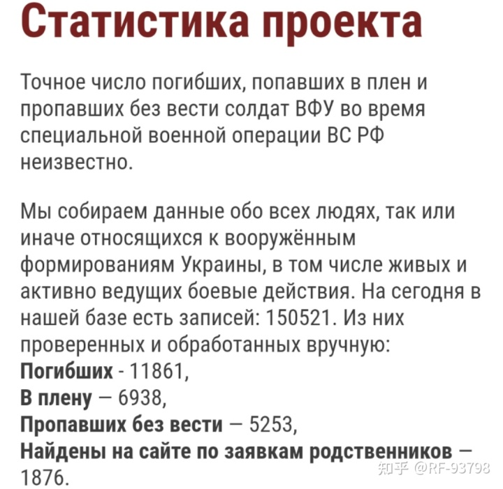
由于截图时间与写作时间有不同，截至2023年3月19日已增加到1876人
可以说，乌克兰并没有一个合格的动员计划，不存在分类动员，不存在对于动员人员的健康管理，甚至各级政府对于自己管辖范围内的人口情况都难以做到掌握。乌军开展的十轮（甚至更多）征兵并不是逐层递进式的，而是根据仅有的人口信息对于辖区内人员过筛，向所有可能的人员发出传票，而在应征热情下降后只能采取入户/当街抓人的方式确保征募足够的人员。就像2023年3月13日华盛顿邮报的文章中所描述的，“在最初阶段，乌克兰人争先恐后地志愿参军，但现在全国各地没有报名的人开始害怕在街上被递交征兵传票”。
而乌克兰针对被征募人员的训练可以说混乱程度不亚于征募，由于没有构建动员人员训练体系，一部分被征募人员在本国接受训练而另一部分则接受来自西方国家的培训。在乌克兰本地的训练场，被征募人员接受乌军或是来自北约教官的训练，但就像接受华盛顿邮报采访的46旅呼号为Kupol中校所描述的那样，乌军的教官大多为滥竽充数之辈，而北约教官又严重不足，部队所接收的新兵缺乏最基本的训练（后续该中校因采访中承认部队损失惨重已经基本丧失战斗力而被处分）。前线乌军士兵宣称，作为普通步兵被征募的人员仅接受了3天到2周的训练就被派往前线。他们被派往最前线的挖掘堑壕并承受俄军最猛烈的炮击，毫无经验的新兵往往死伤惨重。为了保证这些人不发生溃逃，乌军开始将纳粹民团人员编入其他作战单位充当督战队（而据向俄军投诚的来自美国的雇佣兵叙述，也存在由波兰士兵组成的督战队）。
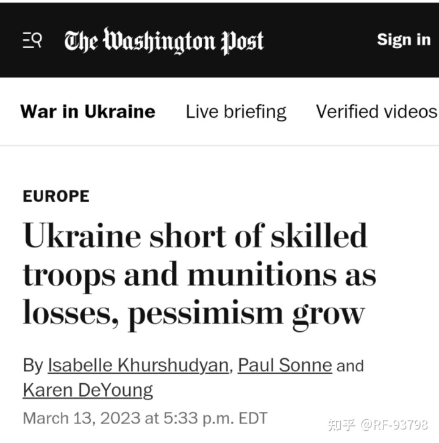
而国外接受西方国家训练的被征募人员，其训练周期也基本在一个月左右，而对于正常国家的士兵而言，完成基础性训练通常需要6个月，培训一名合格的技术兵则需要更长的时间。法广在2022年7月的报道中援引英国国防部、外交部等消息称，英国计划在同时培养2400名乌克兰人员的情况下每120天培训1万名乌克兰人员，而在2023年2月的报道中，英军表示在6个月内实现了训练1万名乌克兰人员的目标。培训时常相对较长的是捷克，乌军93旅的新兵在捷克接受为期40天的训练。可以看出，乌克兰人员平均受训时间在4-5周左右。在考虑到这些人员的来源于身体状况，这对于任何一支军队都是无法接受的。而来自北约方面的教官的评价也认为，乌军动员人员毫无军事素养，身体素质与军队要求严重不符，在短期培训中，他们唯有在医疗救护方面的表现能够被评价为合格。
而针对专业技术兵种的训练，被认为更加不足，根据华盛顿时报的报道，五角大楼宣称，他们以5周为周期培训乌军机械化部队使用布雷德利装甲车，这些训练不仅仅包括装甲车的使用，也包括基础士兵科目，包括射击与医疗，甚至还包括最后营级规模演习的时间。不仅如此，路透社也报道，波兰军队为乌克兰军队培养豹2坦克的课程也被缩短为五周。而根据德国与西班牙向乌克兰提供豹2坦克的日程，乌克兰士兵接受训练的时间也不会超过一个月。虽然接装豹2坦克的部分人员来自第1坦克旅这样的老牌部队，但在短时内完成改装一款北约制式装备也被认为是不切实际的。
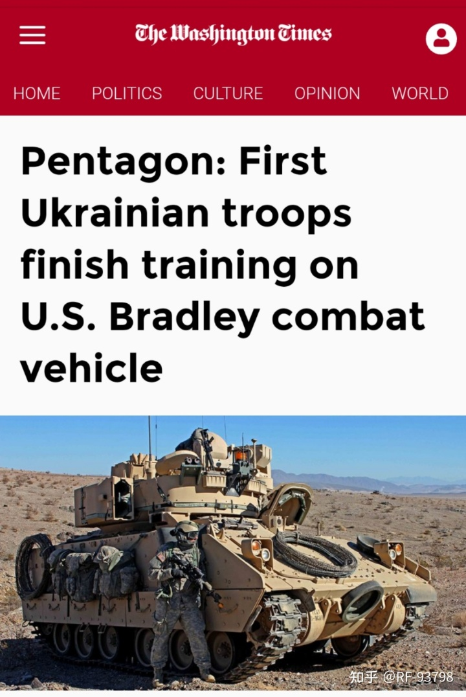
相较于能够通过强制征募获得的基层士兵，乌克兰的中下级军官的萎缩对于部队战斗力打击更大。在冲突爆发后，乌克兰的军事学院并没有通过大规模开办短期课程来充实他们军官的迹象，而这或许与乌军在冲突爆发前严重依赖北约的培训（根据美国国防部证实，仅2015年至2022年1月，美军就为乌军培训了2.3万名官兵。而北约共计为乌克兰培训了超过8万人，这些人都成为乌军中下级军官或部队骨干力量），乌克兰自身的军事人才培养能力在冲突爆发前已经对外界援助形成了路径依赖有关。在前线，被瓦格纳俘虏的乌军军官证言，被征兵后活过三个月的人成为排长。而华盛顿邮报也援引乌克兰官员的话称，乌克兰失去了大量冲突爆发前由美国培训的下级军官，这些损失使得乌军战斗力严重下降。
综上所述，乌克兰在持续一年多的冲突中，武装力量损失惨重，其能够坚持一年，代价是战前训练有素的部队损失过半，大量的动员人员在血肉磨坊中被消耗。但其掌握下的人口资源并不富裕，加上糟糕的动员与培训体系，乌克兰还可以再维持多久这样的消耗成为问题。在战争的第二个年头，由于有经验的军官士兵的大量损失，缺乏经验的新兵将毫无疑问地遭受更严重的损失，而乌克兰是否能够动员与冲突第一年同样多的人员，从目前来看应该是否定的。在2022年中尚不可凭借数倍于前线俄军兵力的力量击败对手的乌克兰武装力量，在面对2023年通过动员与调动瓦格纳集团前线兵力逐渐充实的俄军，前景不容乐观。
3.捉襟见肘的库存与逐渐丧失的耐心
作为冲突背后的推手，可以说，如果没有西方国家的推波助澜，本次冲突应该在2月底到三月就能以和谈形式解决，而如果没有西方国家的军事援助，乌军的装备损失情况也无法支撑其在2022年下半年继续作战。
一般认为，乌克兰继承了大量苏联军事装备，但在长期的军售、走私盗卖以及由于过期或保存不当逐渐被消耗。其中，对于小型武器的库存，没有确切方法确认乌克兰在冲突爆发前的库存，但根据冲突前与冲突爆发后乌克兰武装力量普遍存在的缺乏轻武器尤其是机枪，需要通过动用二战库存与依靠北约国家劫掠伊朗出口轻武器船只中的小型武器补充的情况来看，乌克兰政府的轻武器库存存在较大的缺口。相较于小型武器的库存，大型武器如坦克装甲车辆的数量更容易确认，在冲突爆发前，乌克兰武装力量被认为装备了1000辆左右的坦克与3000多辆装甲车辆，但考虑到苏联遗留的武器库，乌克兰实际能够使用的坦克大于这个数量。1992年，乌军从苏联继承了至少6000辆坦克，除去早已不符合现代战争要求的T54/55，乌克兰拥有至少330辆T80、1300辆T72、2100辆T64，而在1992-2014年中，除去乌军监守自盗对外走私的坦克外，乌克兰官方对外出口了至少1522辆坦克（包括345辆T55），其中至少有788辆T72，占半数左右。按照纸面数据，乌克兰至少还拥有近3000辆现代化坦克，但通过卫星图与实地照片可以看出，部分储存的坦克已经不具备修复价值（如利沃夫装甲修理厂的28辆T72），除去完全不能修复或2014年被顿涅茨克人民军与卢甘斯克人民军缴获的坦克，乌克兰军队能够使用的坦克被认为在2000辆左右。而装甲车辆，乌克兰被认为从苏联继承了大量步兵战车与装甲输送车。但在冲突爆发前，乌军的装甲车已经不够满足部队需求，甚至需要使用英国“撒克逊”装甲车或者反伏击车乃至装甲悍马来充当装甲车，而在冲突爆发后，乌军甚至将大学中用作教具的BMP2以及各类原型车投入作战。此外，尽管拥有一定的装备储备，但乌军的弹药却无法满足装备的需求。
这些装备，尤其是装甲车辆在开头的几个月内就遭受了重大损失。在6月份乌克兰国防部宣称，其装甲车辆损失了半数左右。此外，比起装备的匮乏，更加奇缺的弹药使得乌军必须承受十倍于己的来自俄军的炮火。
在2022年下半年，乌克兰武装力量严重依赖北约与其他西方国家提供的装备，在开源信息中，乌军使用东欧国家提供的T72与BMP1，北约提供的反伏击车、装甲悍马以及M113情况越来越普遍，而由于损失巨大且新编部队的巨大需求，乌军的装甲车辆常常运载超过定员2-3倍的人员且只能保证一线部队使用，二线部队已经开始大量使用民用车辆。而外国援助的火炮也被大量使用。
而到了2023年上半年，根据开源信息，我们发现乌克兰方面坦克出现的画面越来越少，仅装备一个连左右的阅兵车辆T84也被投入到前线。而装甲车辆在前线乌军车辆中所占比例低到了令人无法承受的程度，一个连级规模部队往往仅编有数辆反伏击车或装甲悍马，其余人员只能乘坐民用车辆行军。在这个阶段俄军打击的可视化信息中，相当数量被摧毁的火炮都来自于外国援助，其中摧毁M117榴弹炮的可视化战果已经超过80门，超过美国援助数量的一半。
根据统计，冲突爆发后一年时间里，仅美国就向乌克兰提供或批准提供超过1600枚毒刺、8500枚标枪、2500枚陶与54000件其他反装甲武器及弹药；包括160门155毫米榴弹炮与超过1000000枚155毫米炮弹、100000枚125毫米坦克弹药、45000枚152毫米炮弹、20000枚122毫米炮弹、50000枚122毫米火箭弹在内的超过2000000枚炮弹，并向乌军提供了远程打击的海马斯火箭弹；超过13000件小型武器及超过1000000000枚小型武器弹药；超过2000套无人机超过750000件单兵装具等装备；大量载具，包括20架米17直升机、31辆艾布拉姆斯主战坦克、45辆T72、超过100辆布雷德利步兵战车、超过500辆反伏击车、90辆斯特赖克轮式运兵车、300辆M113装甲输送车、250辆M117装甲输送车、超过1700辆悍马、超过70套反炮兵雷达等装备；以及无人机、反舰导弹、防空导弹系统、航空弹药等几乎覆盖了全兵种的装备及弹药。整个北约在2022年向乌克兰提供了410辆坦克、300辆步兵战车、1100辆装甲输送车、925辆反伏击车、1540辆高机动车、300门牵引榴弹炮、220辆自行榴弹炮、95辆多管火箭炮、近百套防空系统、超过50架军用飞机以及数千架无人机。
提供的装备几乎包括西方能够获得的所有苏式装备及其弹药，除了2023年通过摩洛哥获得的T72与媒体传闻作为西方提供援助贷款条件为要挟被要求提供的巴基斯坦军队的44辆T80UD外，苏式装备在世界范围内的来源已经几乎断绝，通过分析美国提供的苏式弹药数量与战场开源信息，由于苏式弹药的匮乏，虽然仍有一定数量没被摧毁，但乌军的苏式大口径牵引火炮已经越来越少出现在战场上，而更加难以获得的203毫米炮弹，乌军的库存已经见底，前线士兵开始使用早已过期且保存状况糟糕的弹药作战。为了尽可能获得苏式装备与弹药，美国政府甚至试图威胁古巴与委内瑞拉向乌克兰移交装备并与欧盟一道胁迫塞尔维亚向乌克兰提供了至少一批的122毫米火箭弹。
而西方所提供北约制式武器的弹药消耗也已经完全超过整个西方世界的生产速度，法国155炮弹年产量不及美国的月产量，而美国一年只能生产不到20万枚155毫米炮弹，为了向乌军提供炮弹，美军被迫动用了驻欧美军的库存并将在以色列存储的30万枚155炮弹以及驻韩美军的炮弹提供给乌军并向韩国采购10万枚炮弹；而在反坦克导弹一项上，乌军已经用掉美国近５年的产量；驻日美军因为支援乌克兰耗尽海马斯火箭弹库存，被迫取消美日联合演习中的实弹射击。此外，欧美还通过向巴基斯坦购买以及劫掠伊朗运输船的方式为乌军补给弹药。
经过一年的援助，东欧国家的库存基本被消耗殆尽，而欧洲也不容乐观。在经过不到一年的援助后，德国的弹药库存被认为甚至支持不了国防军一天的作战，为此德国国防部长受到指责，而法军因为缺乏火炮已经难以完成炮兵训练。金融时报的报道指出，俄乌冲突几乎耗尽了欧洲的军火库，并使美国重新审视本国武器储备。美国陆军部长表示正在努力将产能提高到每月20000枚，而新转产的工厂采取两班轮替将能够每月为美军提供1.1万枚155毫米炮弹。而法国也表示将与澳大利亚合作扩大产能，扩大的产能将达到每年数千枚炮弹。
尽管背后的支持者在不断为乌克兰搜罗装备弹药，并试图扩充自身产能，但由于这些国家自身工业能力有限，远远难以满足乌克兰的需求。金融时报2023年3月4日的报道宣称，乌克兰要求其支持者每月额外提供至少25万枚炮弹。乌克兰国防部长雷兹尼科夫在写给欧盟的信件中表示，乌克兰每月使用110000枚155毫米炮弹，是俄罗斯的1/4，乌克兰希望每月获得594000枚炮弹，如果需要成功执行战场任务，至少需要每月获得356400枚炮弹。这样的需求已经大幅超出北约的生产能力，欧盟只有12家工厂能够生产155毫米炮弹，而且他们难以在资金问题上获得所有成员国的同意，目前可知道的是，在3月23日至24日的布鲁塞尔峰会召开前，欧盟没有提供给生产商用以生产的资金，而就算资金得以批准，通过金融时报的报道可以获知，欧盟在不进入战时状态的情况下，弹药的生产能力也与最低需求相去甚远。而就算欧盟进入了战时状态，技术工人与原料也不可能从工厂大门边的油纸包里取出来。
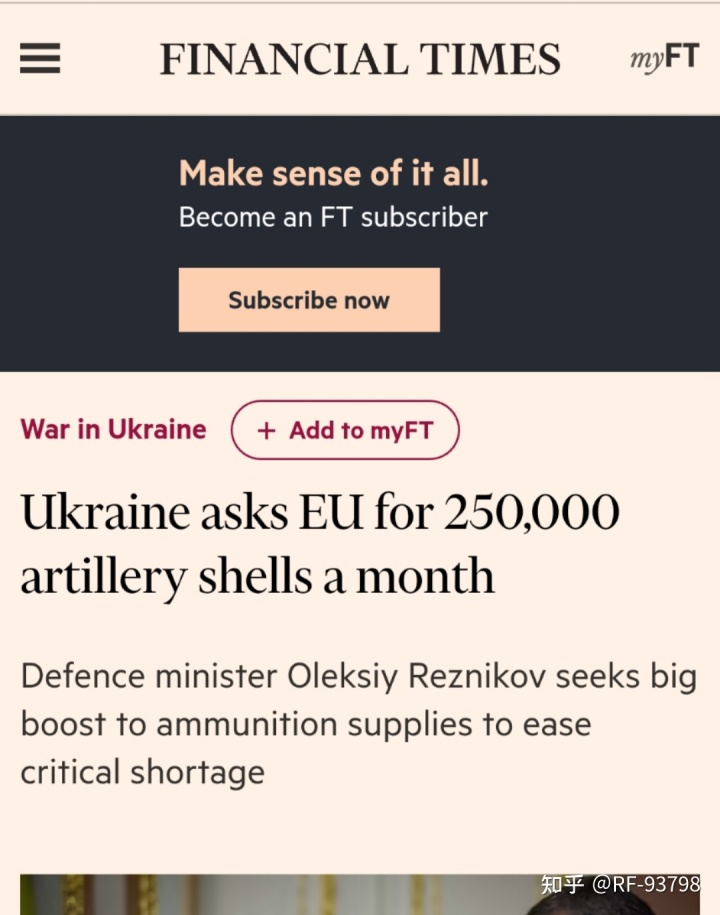
在2022年，西方国家尚能通过动用库存、购买以及劫掠的方式满足乌克兰最低限度的弹药需求。但这样的援助是不可持续的，如果继续保持这样的生产速度，乌军连最低的火力的水平都将难以保证。事实上，比起国防部长的表态，乌军目前弹药应该更加缺乏，前线从军官到士兵都在采访中无一例外地宣称他们的弹药严重匮乏，炮火支援基本不存在，迫击炮一天只能获得十枚炮弹的补给，且由于过于老旧，炮弹的质量无法保证。
而对于装备尤其是载具，由于冷战遗产尤其是苏联遗产逐渐被消耗殆尽，而提供现代化装备将严重损害本国军队战斗力，乌克兰的支持者在提供装备时都显得更加犹豫。法军由于提供了超过20%的凯撒卡车炮后本国炮兵训练都难以完成，对于马克龙提出的支援勒克莱尔主战坦克的想法，法军表示了反对；而美国宣布由于装备返修，31辆艾布拉姆斯最早也需只能在2023年底能交付乌军；荷兰与丹麦撤回援助豹2的承诺，拒绝将坦克转让给乌克兰；芬兰修改了承诺，只交付承诺的14辆中的3辆；西班牙也将承诺缩减了一半以上，只提供10辆豹2。比起预期的上百辆豹2，北约对乌克兰最终豹2的交付量应该不会超过德国国防部统计的62辆，加上英国承诺的14辆挑战者2、捷克提供的90辆的T72（部分可能来自摩洛哥）、波兰承诺提供的60辆PT91，乌军在2023年春季最多只能获得5个半营左右的坦克，加上现在残存的坦克，乌军甚至难以恢复冲突爆发前的装甲兵编制。
而比起上文中军事上的库存的消耗，乌克兰还面临着支持者的耐心的流失。由于西方国家对俄罗斯的制裁造成的高能源价格，将欧洲主要国家的通胀一直保持在高位，欧元区的通胀率维持在接近10%的高位，除了物价高企造成的民生问题外，高能源价格几乎摧毁了欧洲的工业，巴斯夫集团裁员2600人并将工厂搬离德国，德国传统优势领域的金属工业与化学工业受到巨大打击，再加上来自中美的新能源汽车的降维打击，德国政府实质上已经被迫放弃了工业4.0；英国通胀率超过10%并被认为2023年其经济将进一步萎缩；美国的通胀率虽然低于7%，但也达到可40年来的新高，2022年贸易逆差也再创新高，而由于此次危机中无法将危机转嫁给发展中经济体，美联储的加息政策引爆了国内银行业危机；而日本的CPI创下泡沫经济以来新高超过4%，在2023年1-4月，有超过1.4万种食品涨价或决定实施涨价，飞涨的物价与能源价格使得日本家庭被迫大幅削减其他消费以满足基础生活消费，而日本贸易上持续19个月出现逆差，根据财务省3月16日发布的数据，2月份贸易逆差为8976亿日元，创出有可比数据的1979年以后的最大逆差，而另一方面国债市场的恶化程度也远超日本政府预期，日银在2023年1月的国债购入额达到23万6902亿日元，远超去年6月创下的最高额，对于长期国债的保有率在2023年1月20日达到53.5%，日本政府面对的国债泡沫不亚于当年的房地产泡沫，而由于汽车产业等核心产业竞争力衰退，再加上原材料与能源价格高企，日企去年第四季度经常性利润减少2.8%，其中化工行业减少26.9%，日本企业完全告别“漂亮50”已经基本成为了共识；而韩国，2023年前两个半月的贸易逆差已经几乎等于2022年贸易逆差的一半，且自1997年5以来首次出现贸易逆差连续超过一年，而这对于贸易占GDP比重为80%（参考我国为37%、日本为37%、越南为186%，均为2021年数据）的工业国家而言，显而易见是巨大的衰退。
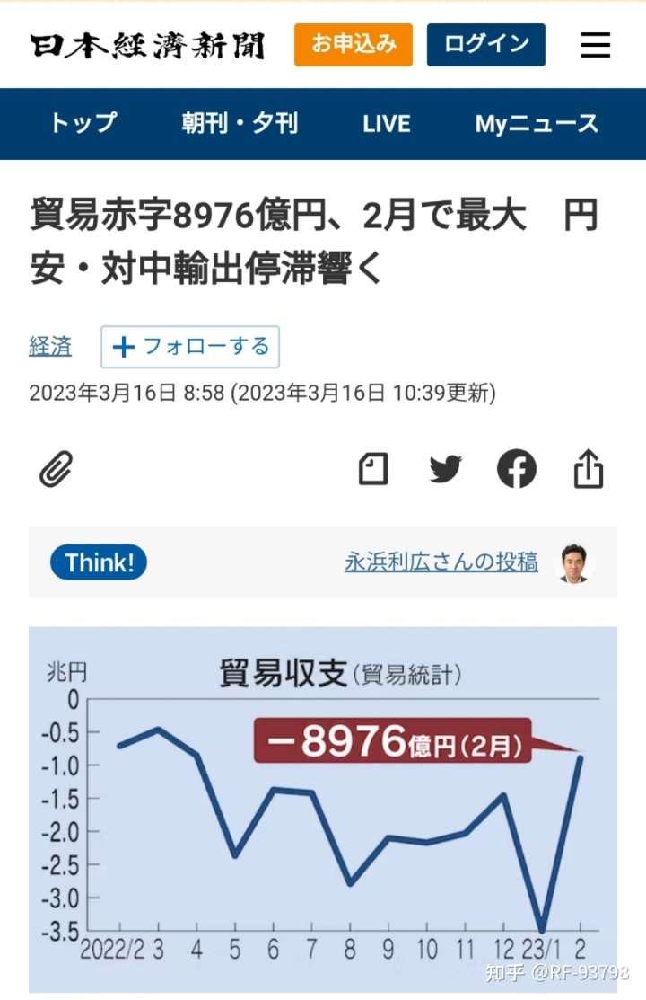
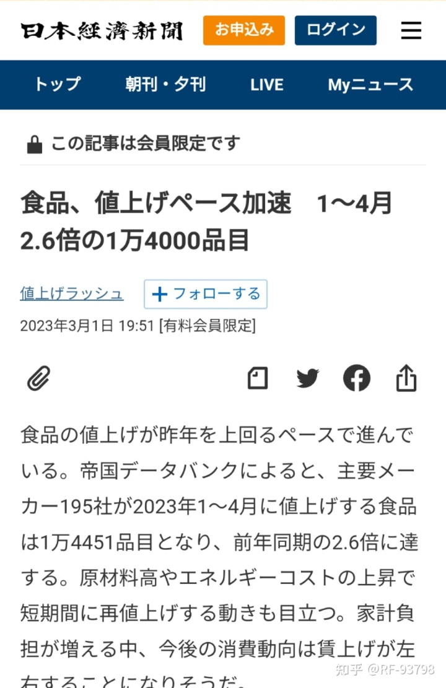
巨大的经济压力使得民众对于继续对乌克兰进行援助都颇有微词，在柏林，德国民众为阵亡的俄罗斯士兵献上鲜花。人们逐渐厌倦了一场远在天边的冲突，他们想要从冲突中脱身，希望国家将精力集中在解决国内的物价问题而不是继续使用税金援助乌克兰。而部分政府也开始考虑结束冲突的方法，对于继续将资金投入无底洞中，他们更迫切需要解决通胀与拯救濒临破产的本国制造业。在美国，由于2024年大选的压力，如果让冲突延续到选举动员阶段，则民主党在乌克兰问题上将承受来自共和党的更多压力，在国内经济不景气之下提供的大量的援助，尤其是其中大量去向不明的资金（如美国宣布援助给乌克兰的1800架凤凰幽灵自杀无人机，从冲突爆发之初宣称提供到之后追加提供再到如今，只出现过一次宣称为其本尊的廉价航模照片，被认为是一场内外勾结骗取联邦政府资金的骗局），共和党决不会放过这样攻击政敌的绝好机会。国家利益3月16日的文章认为，无论是对于发展中国家还是法国、德国、意大利这样的欧盟发达国家，甚至是对于泽连斯基和他身边的政治精英而言，来自北京的和平建议吸引力都胜过白宫试图展示的全面胜利姿态。因为对于各国而言他们的经济已经遭受了极大的挫折，而乌克兰的政治精英也逐渐相信美国并不能为其提供长期的援助。
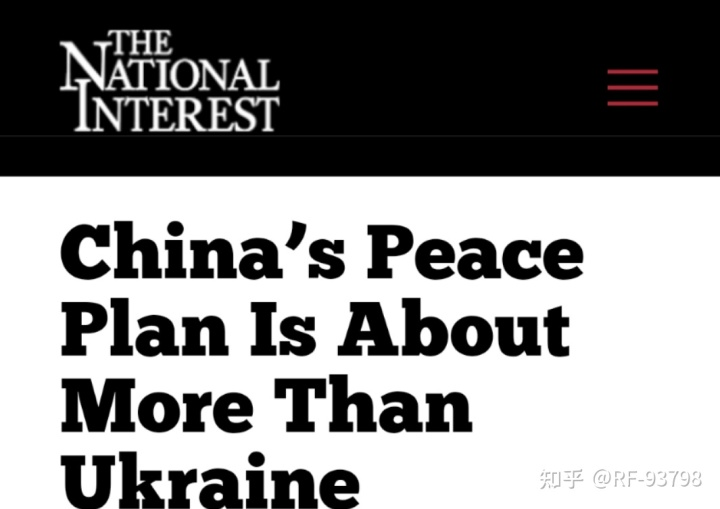
中国的和平建议几乎要赢得除美国外其他国家的青睐
由于民意的沸腾以及各国自身的需求，进入2023年后，西方媒体也开始为结束冲突做舆论准备。金融时报提问“拜登誓言永远支持乌克兰，但美国愿意吗？”；今日美国则质疑美国提供的资金是否落入了腐败分子的口袋；美国国家公共广播电台报道了认为乌克兰不值得支持的声音；华尔街日报更进一步，披露了乌克兰内部的权力争夺；ANN在报道中承认了西方对于俄罗斯的制裁并没有产生作用；而POLITICO则报道了美乌之间裂痕的扩大。而且，与之前冯德莱恩在承认乌军超过10万人丧生后相关视频被迅速删除不同，在2023年的新闻中，我们越来越多得看到承认乌军损失惨重，缺乏训练并质疑乌军是否有能力发动反击的报道，死亡人数超过十万也不再是禁忌的字眼，而是可以直接出现在报道中。
另一方面，由于西方支持者在之前为自己树立的支持乌克兰“反抗侵略”形象，他们需要一个第三国形象来明确表达出需要和谈的想法。而来自北京的建议为国际社会提供了新的思路，各国可以以最小的政治代价获得足够的经济收益。基于此，产经新闻炮制了所谓来自我国政府内部人士的“解放军军事科学院在2022年12月的推演中，得出俄乌冲突将于2023年夏季左右以对俄军有利的形势结束”的新闻，以证明乌克兰已无以为继。而进一步地，3月15日柏林日报的文章指出，实现乌克兰停火，来自中国的计划需要被认真对待，这份计划既包含了符合乌克兰与北约诉求的内容，也包含了受俄罗斯欢迎的内容，可以被视为谈判的良好起点。
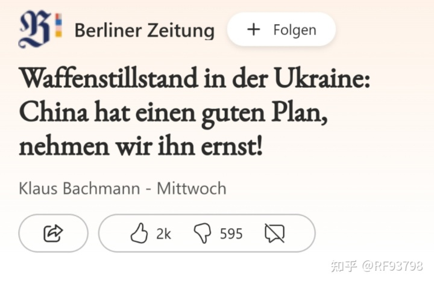
来自中国的好计划
综上所述，在乌军早已耗尽库存，无论财政还是军队都需要依靠其支持者，而其支持者越来越难提供足够的武器弹药，并且经济面临的问题十分严峻，在这样的情况下，乌克兰与其背后支持者都不可能坚持太久。
4.春夏之际的“反攻 ”
虽然乌克兰及其背后支持者的压力越来越大，但对于对于美乌而言，显然还存在着放手一搏的打算。
尽管如上文所分析的，无论是能够动员的人力资源还是能够获得的装备与弹药，乌克兰都很难坚持过2023年，但明显乌军有发动试图最后一搏争取更多有利条件的迹象。观察目前在国外受训的乌军人员训练期，以及要求西方交付装备尤其是主战坦克的希望期限基本都在3月底，乌军甚至拒绝了波兰提供10周乘员训练而要求只需要5周的情况来看，乌军应该有编组部分精锐突击部队在翻浆期结束后对俄军发动反击的打算。而具体反击方向应该是在扎波罗热方向，该方向的俄军只有1万多人且不像赫尔松方向需要解决渡河作战的问题。事实上，在2022年底乌军就试图在扎波罗热方向发动进攻，不过由于巴赫穆特方向告急，被迫将扎波罗热方向的军队调到巴赫穆特方向。而根据最近的战场信息，乌军已经在扎波罗热地区发动连级规模的试探性进攻，不过被俄军以逸待劳地击败了。在获得最新一批援助后，乌军应该会编组一支突击集群发动大规模进攻。
而通过美方的表态，我们也可以确认攻击将被发起，华盛顿邮报引述美国官员的话表示，公式将于4月底或5月初开始，虽然很紧迫，但时间站在俄罗斯一边，愈是拖延对乌克兰愈不利。至于目的，毫无疑问就像白宫安全委员会发言人沃森所说，“确保乌克兰在谈判桌上处于最有利的地位”。
但美乌没有提起的是攻击如果失败，乌军将耗尽最后的生力军与重装备，届时俄军将获得战场上的绝对优势，而乌军将再也无力组织更多力量阻止俄军前进，而到了那个时候，乌克兰或是北约能够提供足够的筹码将俄罗斯吸引回谈判桌前吗？
编辑于 2023-03-21 13:46・IP 属地日本
...